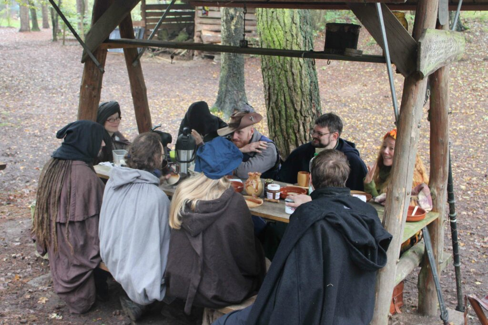

Willkommen in Port Tannweiler!
Port Tannweiler – Veranstaltung 3
Einladung
Auch in diesem Jahr bleiben wir in Greifenhain, da sich dort der beste Platz für ein Erntedankfest befindet.
Nur werden wir es dieses mal Hopfenfest nennen, aus dem einfachen Grunde ,da sich unsere Rattinger Freunde dazu bereit erklärt haben eine Taverne auf dem Fest zu betreiben. Wie im Letzten Jahr, so soll auch in diesem Jahr, ein Bänkelsänger,und Geschichtenerzähler Wettstreit statt finden. In der Hoffnung das es den Mitstreitern im letzten Jahr so gut gefallen hat, hoffen wir auch dieses Mal auf rege Teilnahme. Das Spiel mit den Dots werden wir auch wieder anbieten, da es sich wohl großer Beliebtheit erfreute, fast jeder Gast des Festes nahm daran teil.
Datum & Modalitäten
Die nächste Port-Tannweiler Veranstaltung findet vom 25. bis 27. Okt. 2024 statt.
Für alle Wettstreite werden dem Gewinner und Finalisten großzügige Münz- Gewinne ausgezahlt werden. Gewinne Spender: Der Herr von Graifenhain und die Derpel Brauerei
OT - Organisation
OT: Dies ist wie immer ein Selbst Verpflegungs- und Zelt Con. Ein paar Kleinigkeiten wird die Taverne auch an Spezereien anbieten Geplant sind für 60 SC und 10 NSC.
Anmeldung & Tickets
Zu Anmeldung & Ticketverkauf geht es hier
Über die Larp Veranstaltung
Willkommen auf der Veranstaltungsseite Port-Tannweiler. Über diese Web-Präsenz erfolgt der Verkauf der Veranstaltungsteilnahmen an der Larp-Convention. Die Organisation der Veranstaltung erfolgt unterstützend durch das Team der Schatten-Quest Larp Orga. Die Veranstaltung selbst wird durch das Port-Tannweiler Team durchgeführt, es handelt sich nicht um eine Veranstaltung aus der Schatten-Quest Reihe.
Impressionen vom letzten Mal:
